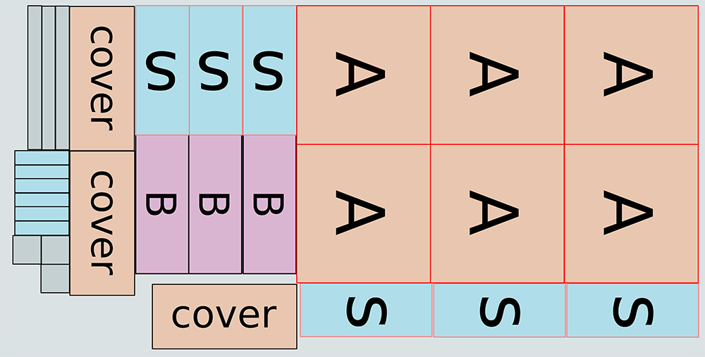

Build a swarm trap
Learn how to build a simple swarm trap from inexpensive plywood. Once built, the swarm trap can be hung from a tree to catch wild honeybees.
A single 4x8 sheet of plywood is enough material to make 3 traps.
Construction Detials
Required materials
- 15/32" sheet of CDX plywood or exterior rated sheathing
- Exterior grade wood glue
- Finishing nails
Cut Materials
Start by ripping down the plywood into the appropriate sizes. The following table shows the cuts that need to be made, and the diagram shows how the stock was broken up.
| Qty | Piece | Length | Width |
| 3 | Cover | 20 1/8" | 8 29/32" |
| 6 | Font/Back (A) | 18 15/32" | 19 3/16" |
| 3 | Bottom (B) | 18 1/4" | 7 1/2" |
| 6 | Sides (S) | 7.5quot;; | 18" |
| 6 | Side Rails | 2" | 8 7/16" |
| 6 | Front Rails | 2" | 20 1/8" |
| 3 | Entrance Gate | 4" | 4" |

Entrance
An entrance was created by drilling a 1 1/4"" inch hole 2 5/8" from the bottom of the trap in the center.
A galvanized nail was hammered into the edge of the plywood from the inside of the trap to keep out critters like birds.

An entrance gate can be added for transporting the bees. The entrance gate was created by drilling a 2" hole in the center of a 4"; x 4" chunk of plywood, and then covering one side with nylon screen. It's possible that bees may be able to chew through the nylon screen, but I am going to give it a try and see how it works - a gate with a metal screen can always be created if it is something that you're worried about.
Construction
Everything is held together using Titebond III and 18 gauge finishing nails.
Downloads